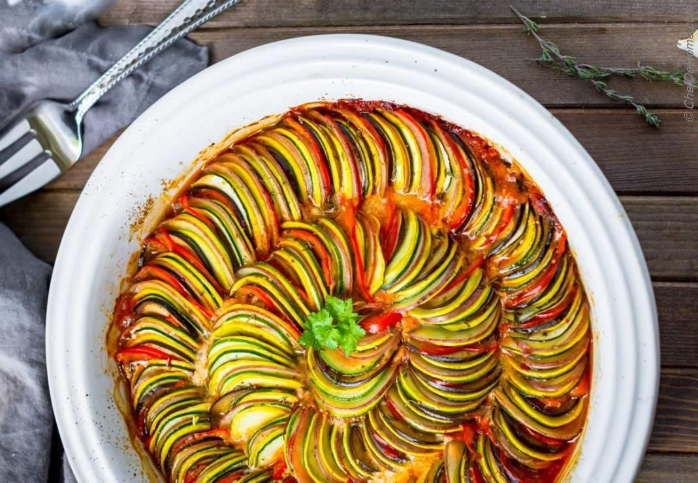

Ratatouille
back to home
My mom has been making some version of this recipe since before I can remember. To this day it reminds me of those first weeks of
autumn where the leaves finally start to turn and the air feels crisp.

Ingredients
- 1 large globe eggplant, peeled, coarsely chopped
- 1 large zucchini, sliced into ¼-inch-thick rounds
- 2 tsp. kosher salt, plus more
- ¾ cup olive oil, divided
- 5 sprigs thyme
- 1 large onion, halved, sliced ½ inch thick
- 1 red bell pepper, ribs and seeds removed, coarsely chopped
- 2 garlic cloves, thinly sliced
- 2 pints cherry tomatoes, divided
- Freshly ground black pepper
- 1 cup torn basil leaves
Instructions
- Preheat oven to 400°. Toss 1 large globe eggplant, peeled, coarsely chopped, 1 large zucchini, sliced into ¼-inch-thick
rounds, and 2 tsp. kosher salt in a colander. Let sit 30 minutes, then pat dry with paper towels.
- Heat ¼ cup olive oil in a large Dutch oven or other heavy ovenproof pot over medium-high. Add half of eggplant and
zucchini and cook, stirring constantly, until vegetables begin to take on color, about 5 minutes. Transfer to a medium
bowl. Repeat with ¼ cup olive oil and remaining eggplant and zucchini.
- Tie 5 sprigs thyme together with kitchen twine. Heat remaining ¼ cup olive oil in same pot and cook 1 large onion,
halved, sliced ½ inch thick, 1 red bell pepper, ribs and seeds removed, coarsely chopped, 2 garlic cloves, thinly
sliced, and thyme bundle, stirring occasionally, until onion is beginning to brown and is softened, 8-10 minutes.
Add 1 pint cherry tomatoes, stirring occasionally, until just beginning to soften, about 5 minutes. Stir in reserved
zucchini and eggplant, then top with remaining 1 pint tomatoes (do not stir); season with salt and freshly ground
black pepper. Transfer pot to oven and roast until all vegetables are softened and tomatoes have begun to burst,
15-20 minutes.
- Remove thyme bundle. Transfer to a serving platter and top with 1 cup torn basil leaves.